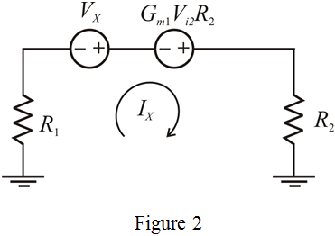
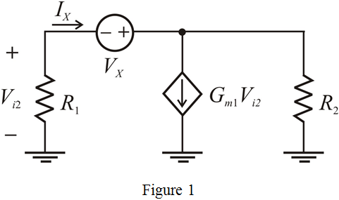
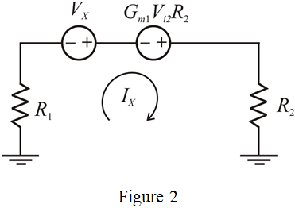

From the circuit in Figure 1, the current  using Ohm’s law is,
using Ohm’s law is,
…… (2)
The circuit in Figure 1 can further be reduced (equivalent) is shown in Figure 2.

Refer to Figure 9.44 in the textbook for the equivalent circuit of the op-amp circuit.
It is observed that the total time constant of the overall circuit using the method of open circuit time constants is,
…… (1)
Consider the equivalent circuit to find .

From the circuit in Figure 1, the current using Ohm’s law is,
…… (2)
The circuit in Figure 1 can further be reduced (equivalent) is shown in Figure 2.

Apply Kirchhoff’s Voltage Law to the circuit in Figure 2.
…… (3)
Recall the expression (2).
Simplify the equation (3) further.
…… (4)
Substitute in equation (4).
The ratio of is called  . That is,
. That is,
Substitute for to get the 
Now substitute the expression for in equation (1).
Substitute for  .
.
Therefore, the expression for  is, .
is, .
The expression for  in the textbook (equation 9.176) is,
in the textbook (equation 9.176) is,
Hence, the obtained result is same as the equation (9.176).